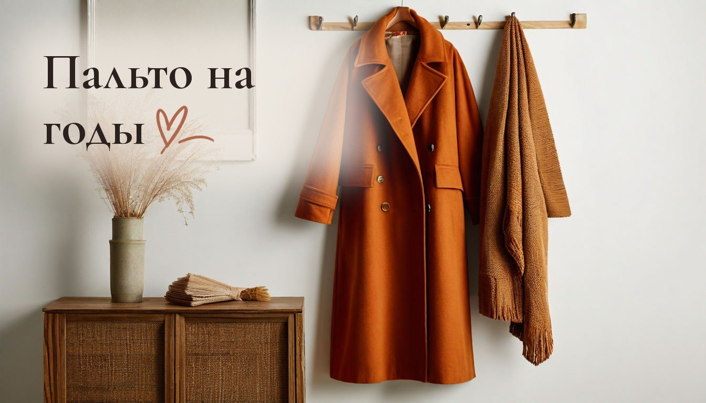
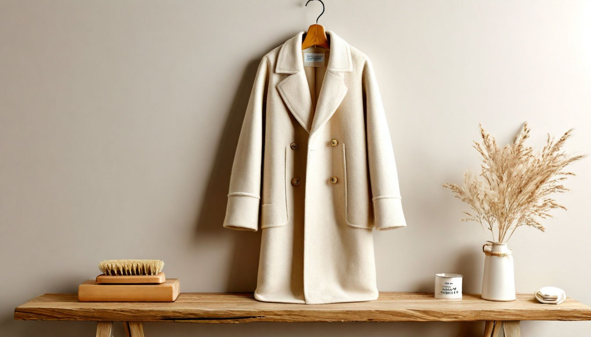

Как ухаживать за шерстяным пальто: 5 привычек, из-за которых оно стареет к ноябрю

В сентябре пальто выглядело как в магазине. К ноябрю на нём катышки у карманов, вытянутые плечи и пятнышко на рукаве, которое никак не уходит.
Шерстяное пальто стареет не столько от времени, сколько от ежедневных мелочей: как его вешают, сушат и носят. Хорошая новость в том, что уход за шерстяным пальто почти ничего не стоит, нужна только пара привычек.
Мне жаль вещи, которые теряют вид за один сезон, особенно дорогие. А пальто как раз из тех вещей, которые при простом уходе служат годами. Вот пять ошибок, которые сокращают пальто жизнь.
Привычка №1: вешать пальто на крючок
Крючок в прихожей удобен, но пальто весь день висит на одной точке за петельку или воротник. Ткань на плечах вытягивается, и появляется горбик, который потом не уходит даже после глажки.
Что делать: дома вешать пальто только на плечики с широкими краями, повторяющие форму плеч. Тонкие проволочные плечики тоже оставляют следы. Пуговицы при этом лучше застегнуть хотя бы на одну-две: так пальто держит форму на плечах и у воротника.
Привычка №2: сушить мокрое пальто у батареи
После дождя или мокрого снега хочется быстрее высушить пальто, и его вешают поближе к теплу. Шерсть от резкой сушки садится, грубеет и может пойти пятнами.
Что делать: встряхнуть, повесить на плечики в комнате и дать высохнуть естественно, подальше от батареи. Сырое пальто не убирать в закрытый шкаф. Если промок подол, его можно аккуратно расправить руками, пока ткань ещё влажная, и тогда он не пойдёт волной.

Привычка №3: не чистить его после носки
Пыль, шерсть кошки и мелкий мусор оседают в ворсе и постепенно въедаются, делая ткань серой и тусклой.
Что делать: раз в несколько дней проходиться по пальто мягкой щёткой для одежды сверху вниз, по направлению ворса. Липкий валик хорош для шерсти домашних животных, но щётку не заменяет. Щётку лучше брать с натуральной щетиной средней жёсткости, слишком жёсткая будет вытягивать ворс.
Привычка №4: стирать пальто в машинке
На ярлыке часто разрешают деликатную стирку, но большая шерстяная вещь в барабане может сесть, а подкладка и утеплитель сбиться комками.
Что делать: небольшие пятна убирать сразу, промакивая влажной салфеткой без трения. Для полной чистки отдавать пальто в химчистку раз в сезон, обычно весной перед хранением. Летом пальто хранят в дышащем тканевом чехле, а не в плёнке, и кладут рядом мешочек с лавандой или кедровый брусок от моли.
Привычка №5: носить одно пальто каждый день без отдыха
Шерсти нужно время, чтобы восстановить форму после целого дня носки. Если надевать пальто каждый день, локти и спина быстрее вытягиваются, а под мышками появляются катышки.
Что делать: если есть возможность, чередовать пальто с курткой хотя бы через день. Если пальто одно, вечером обязательно вешать его на плечики, а не бросать на стул. И не носить в карманах тяжёлые ключи и телефон: карманы растягиваются и перекашивают силуэт.
От автора
Хорошее пальто покупают не на один сезон, и мне всегда обидно, когда оно теряет вид из-за крючка или батареи. Две минуты щёткой и правильные плечики дают больше, чем любое средство из магазина.
Дома у нас бенгальская кошка, которая обожает лежать на всём мягком, включая брошенную на стул одежду. Так что плечики и щётка в прихожей для меня не про аккуратность, а про то, чтобы выходить из дома без её шерсти на рукавах.
Подписывайтесь: завтра утром разберу, как хранить картошку в квартире, чтобы она не проросла до весны.
А у вас есть пальто, которое служит много лет и до сих пор выглядит хорошо?